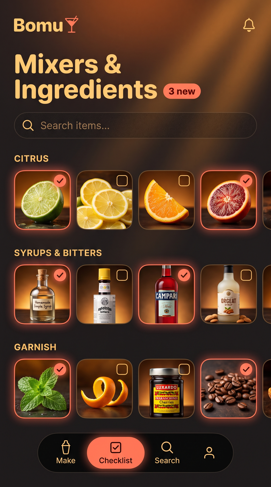
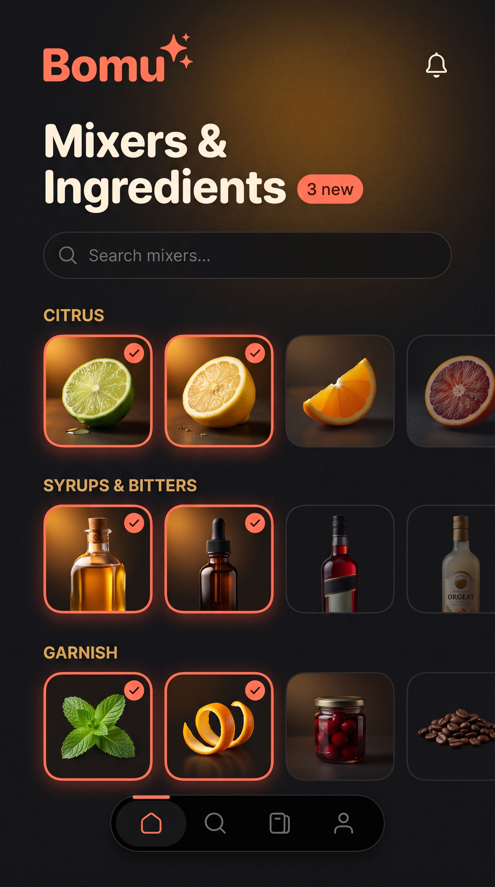

Same "Mixers & Ingredients" screen, restyled to match the warm Home Alt direction you liked: bold rounded sans typography, warm amber-lit tiles, coral checkmarks, black pill nav.
Third variant (moodier/low-key) got stuck mid-generation and I didn't want to hold up showing you these two — they already give a clear split to choose from. Say the word and I'll finish the third, or we can just pick between these two now.

Variant A
Bright warm editorial
Strong top-down amber glow with visible light rays, gold headline text, gold section labels, black nav bar reads as a distinct floating element.
Read: Closest energy to your "energy drink" reference — vivid, punchy, very on-brand for a hero/landing feel. Might be slightly loud for a screen you scroll through often (checklist, not a hero).

Variant B
Editorial dark, warm accent
Darker base with a single soft warm pool of light behind the header only — tiles individually lit rather than a blanket glow. Off-white headline instead of full gold.
Read: My pick. Calmer for a screen you'll scan item-by-item and check off repeatedly — the warmth is there without fighting for attention against 12+ tiles. Reads more premium/restrained, closer to what a checklist should feel like versus a landing page.